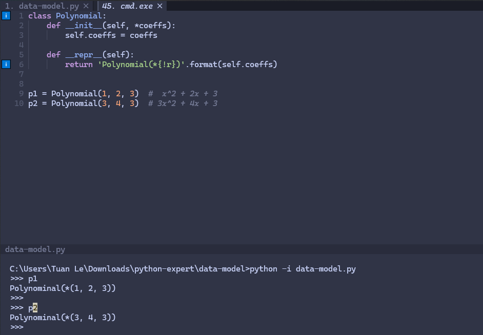
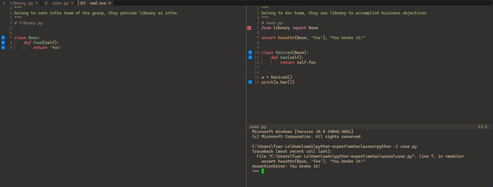
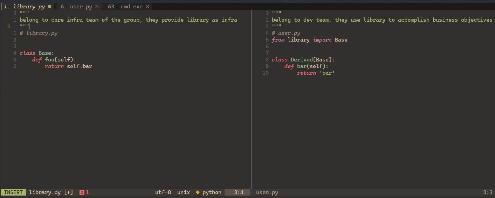
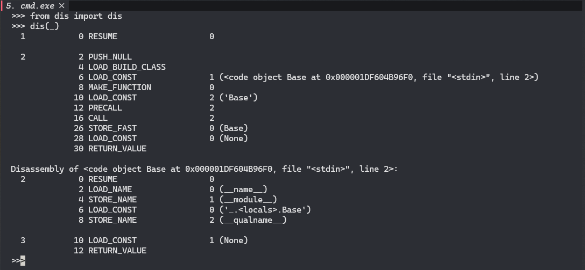
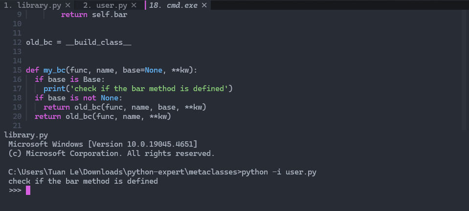
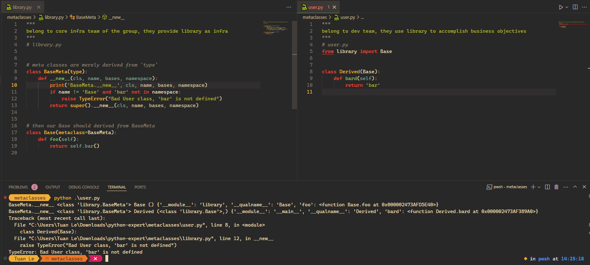
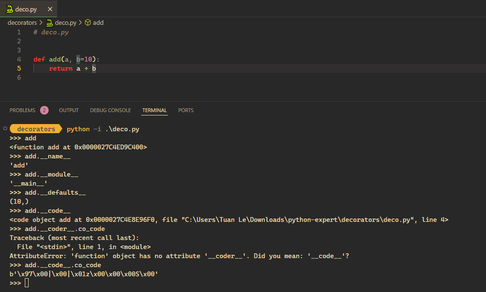

🔥 source: James Powell: So you want to be a Python expert? | PyData Seattle 2017
what is he gonna present?
- something deeply behind the Zen of Python;
- metaphors and programming in Python;
- python is not only scripting language, he will be introducing 4 features of Python and the way experts would think about these features;
- a lot of fundamental details of how these feature work but very little talk about we can conceptualize these features in the broader sense of what they mean for modeling core problem. so 4 features you might have heared before and couple of the core mental models how you can think about, an how you can think about python as a whole, wrapping everything together;
- you will see me stumble to understand that in case you dont utd or dont have docs memorized, it’s alright, the target is to know what they are and what they mean;
- the talk presumes you to have a baseline of Python, but in case you a new to Python he believes there are cores you can take away.

data model protocol (or dunder method)
assume we have a data model with Polynomial object intitially do nothing, why I need 4 lines (instead of 2 lines) to create 2 Polynominals. How can I create and assign coefficients together.
the answer is using a constructor __init__, then we can compact our code like this:
but if we print our objects in the terminal, they look so ugly. We miss the method that actually call repr(obj) when we run obj:

__repr__that’s what __repr__ for, a printable representation of the class:
the next thing we wanna do is to add Polinimials together p1 + p2.
What is pattern here? I have some behaviours that I want to implement, and I write some underscore (__x__) funtions. We call them dunder or underscore methods.
Try google “data model” and we’ll a bunch of documents that list all method to implement the principle behaviours of our objects. There are top-level functions of top-level syntaxes that corresponding to __.
But there are smthg more fundamental here, when I want to:
- x + y ->
__add__; - initialize x ->
__init__; - repr(x) ->
__repr__.
Then what if we want to implement the len() (return the length, which is popular know Python function) -> naturally we’ll be thinking of __len__.
The Python data model is a means by which you can protocols. Thos protocols have abstract meaning depending on the object itself. We tight the behaviours to top-level syntaxes and functions.
Similarly, if we do see the object Polynomial a executable, callable thing, we can implement a __call__ which will turn our class to function, in this case we cant imagine such thing, so pass.
✍ There are 3 core patterns we want to understand and remember in Python to really understand object orientation in Python:
- The protocol view of Python;
- The buil-in inheritance protocol;
- Some caveats around how OOP in Python works.
Which will be continue to present in this video is jumping into a very tricky metaphor a feature we may have heard of.
meta class
imagine there are 2 groups working on some piece of software. one is core infrastructure of the group and they write library code, the other group is devloper group, they write user code. the developer use library code to accomplish actual business objectives. the core team less cares about business problem, they focus on technical stuffs.
you are in the dev team and there is no way to change to code of library.py. in what circumstance the code of user can break -> there is no foo method! To avoid that, we could simply write a test that call bar(), then we could know if it fails before production environment’s runtime.
is there anything simpler to know the ability to fail before hit run time in production env? -> use assert to check existence of the attribute. we will have an early warning right before the class was initiated.

by this way we are enforcing constraints on the base class from the derived class.
now we move to a reverse situation, you are the core structure writer and have to deal with the meathead in the business unit that actually using/abusing/missusing your code ~ you have no idea what are they doing. you write the Base class with the assumption and some responsible developer in the BU will go and implement the bar method.

you have no ability to change and even have no idea where the code on the right pane sit. we can not use hasattr() for this particular situation. the first method is to use try ... catch ..., but it only catches in runtime and we will miss catching it before it goes to production env.
The reason that we could call Python a protocol orientated language is not just because the Python data model the object model is protocol orientated but that the entire Python language itself has a notion of hooks and protocols and safety valves within it.
Python is much much simpler language, the code run linearly from top to bottom. And the class statement in Python is actually an executable code. We can write this:
Only the last one will survive. Python accepts this syntax because it’s class is fundamentally executable.
Let’s get into something more interesting! create a class inside a function and use a function in a module in standard libbrary in Python called dis.
let’s ‘dis’ - stands for disassemble - to see what happen in the bytecode. there are actually things in Python bytecode call LOAD_BUILD_CLASS, it’s actual executable runtime instruction in the Python interpreter for create a class.

at the first section of this lecture, we saw some correspondence between top-level syntac or function AND some underscore method that implements that syntax or function. there should be also top-level mechanism, not explicitly syntax or function, with the process of building a class. there is a build-ins function called __build_class__.

__build_class__, we can check if the bar method is implemented, Python is protocal oriented language!It’s actually quite a common pattern and quite a fundamental piece of Python almost everything that a Python language does in an execution context like building classes, creating functions, importing modules you can find a way to hook into that. once you can find a way to hook into that you can start doing things that you want to do like check is my user code going to break from the perspective the library author.
The most important thing here is understanding existence of this pattern, knowing that there are options solving such problem, and there are even better approachs.
There are 2 fundamental ways that people ussually use to solve this
1. meta class
Show the code
# meta classes are merely derived from `type`
class BaseMeta(type):
def __new__(cls, name, bases, namespace):
print('BaseMeta.__new__', cls, name, bases, namespace)
if name != 'Base' and 'bar' not in namespace:
raise TypeError("Bad User class, 'bar' is not defined")
return super().__new__(cls, name, bases, namespace)
# then our Base should be derived from BaseMeta
class Base(metaclass=BaseMeta):
def foo(self):
return self.bar()
That’s it! you can control, constraint the derived class from the base class in class hierachy.
2. __init_subclass__
We can implement Base like this:
decorator
We would have met pattern like this, that’s is decorator:
Python is a live language, there is no separate step that turns function definitions into bags of a set bits tagged and some elf binary or some PE binary somewhere. That a function definition is actually a live thing, it actually runs at runtime, there’s actually executable code associated with this def f().

That every Python structure that you interact with whether it’s an object or a function or a generator has some runtime life, has some runtime existence you can see it in memory, you can ask it questions like what module UI were you defined in. you can even ask it very useful questions like if you use the inspect module you can say what’s your source code.
decorators python -i .\deco.py
>>> from inspect import getsource
>>> getsource(add)
'def add(a, b=10):\n return a + b\n'
>>> print(getsource(add))
def add(a, b=10):
return a + b
>>> now let’s say I want to calculate how much time does it take to perform the add. simply we would thinking about time, like this:
Show the code
from time import time
def add(a, b=10):
return a + b
before = time()
print('add(10)', add(10))
after = time()
print('time_taken', after - before)
print('add(20, 30)', add(20, 30))
after = time()
print('time_taken', after - before)
print('add("a", "b")', add("a", "b"))
after = time()
print('time_taken', after - before)add(10) 20
time_taken 0.0
add(20, 30) 50
time_taken 0.0
add("a", "b") ab
time_taken 0.0there is something wrong here because we need to add code to everywhere we want to calculate. we see another important pattern in Python, decorator, the Python developers want you to write the simplest, stupidest, quickest thing to get the job done and get the rest of your day with your family.
we will see alot of scenarios where of cases where you can write the simple and stupidest thing to get the job done and when the task at hand becomes harder or more complex or the requirements change you can change your code in a very simple fashion to linearly extend its functionality without have to re-write it from scratch.
in Python we’ll see a number of different features are orientated around how do we write the simplest thing today and then when the problem gets a little bit harder we have an avenue for making our code a little bit more complex.
we can modified a add alittle bit
But if we have more functions, let say sub? We need to modify and make our code complicated. Python is live language that everything has some runtime representaion. We can create timer() which take func, x, and y as arguments (x and y will be forwarded to calculation function)
we can also wrapping like this, timer() will return a function f:
Python provides a syntax for easily implement every behaviours of timer() to every function:
Fundamentally it’s about allowing you to take this wrapping behavior for functions and to wrap wide swathes of functions in one fashion without having to rewrite a lot of user code or having to even perform a lot of turn on your library code.
another example when we want a function to run n-times:
Show the code
running add
running add30wrapp n in to the function so ntimes() takes n instead of f as arg:
Show the code
running add
running add
running add30There is a very important core concept that is hidden in here which is what you might call the closure object duality. it’s not something that we have time to look at in this session.
generator
recall what we’ve learned in previous section:
- there are top-level syntax or function <–> and some underscore methods that implemented it.
- if you have parentheses after something x() <–> implies
__call__protocol implemented.
what is different between these 2:
functionally there is not distinguish between add1 and add2. add1 is syntaxtically whole hell more easy to write. another diffence is if you want to add some statefull behaviors, we can easily modified the class:
there is one what to do with the Adder, another way to do with the function, what he hinted at this object closure duality.
let’s think about a function that take a lot of time to do something, like loading the data from the database. we demo by a simple function compute(), which sleep 0.5 sec for each loop. the function only gives us the result once it completelt complete the loop, it will give us the entire result all at once. what if we care about the first? the first 3 values?
this is undesirable. this is wasteful both from the perspective of time & memory. let’s think about it with the object model and rewrite under Compute class:
the 2nd method:
- Retain state between calls (stateful callables)
- Cache values that result from previous computations
- Implement straightforward and convenient APIs
if you want to access data during computaion, think of:
for x in xs:
pass
x1 = iter(xs) ---> __iter__
while True:
x = next(x1) ---> __next__and re-write the Compute like this:
now, it:
- takes 1 iteration to let you start using it;
- takes no storage;
- but looks ugly.
and there is much simpler way to write a function that operate in such fashion, the generator syntax, it merely:
its state is maintained internally. instead of eagerly computing the values, you give them to the user as the ask. let’s look in the last example:
the generator not only yield the result back, but also the control back to the caller. we can interleave our code with library code, controling them to run in order, that is conceptualization of how generators are built upon - co-routines.
we can either define execution function inside the class or use generator to control the sequence:
context manager
setup & teardown ~ initial action and final action. we would often see pattern like:
beyond the file, it can be also sqllite
Show the code
from sqlite3 import connect
# control the execution is executed when connection is open
with connect('test.db') as conn:
cur = conn.cursor()
cur.execute('create table points(x int, y int)')
cur.execute('insert into points(x, y) values (1, 1)')
cur.execute('insert into points(x, y) values (2, 1)')
cur.execute('insert into points(x, y) values (1, 2)')
for row in cur.execute('select sum(x * y) from points'):
print(row)
for row in cur.execute('select x, y from points'):
print(row)
cur.execute('drop table points')(5,)
(1, 1)
(2, 1)
(1, 2)now we already control if connection is live to do something, we’ve not yet controlled inside the connection, the entry point and the exit point. now behind the scence
with ctx() as x:
passwill look like the following:
x = ctx().__enter__
try
pass
finally:
x.__exit__we’ll try to emplement this to our connection, we’ll wrap it to a temporary table behaviour:
Show the code
from sqlite3 import connect
class Temporarytable:
def __init__(self, cur):
self.cur = cur
def __enter__(self):
print('__enter__')
self.cur.execute('create table points(x int, y int)')
def __exit__(self, *arg): # why need *arg
print('__exit__')
self.cur.execute('drop table points')
with connect('test.db') as conn:
cur = conn.cursor()
with Temporarytable(cur=cur):
cur.execute('insert into points(x, y) values (1, 1)')
cur.execute('insert into points(x, y) values (2, 1)')
cur.execute('insert into points(x, y) values (1, 2)')
for row in cur.execute('select sum(x * y) from points'):
print(row)
for row in cur.execute('select x, y from points'):
print(row)__enter__
(5,)
(1, 1)
(2, 1)
(1, 2)
__exit__now can the exit run before the enter, no! they need to be run sequencely. it remind us about the generator to improve this:
Show the code
from sqlite3 import connect
def temporarytable(cur):
print('created table')
cur.execute('create table points(x int, y int)')
yield
cur.execute('drop table points')
print('dropped table')
class Temporarytable:
def __init__(self, cur):
self.cur = cur
def __enter__(self):
self.gen = temporarytable(self.cur)
next(self.gen)
def __exit__(self, *arg):
next(self.gen, None)
with connect('test.db') as conn:
cur = conn.cursor()
with Temporarytable(cur=cur):
cur.execute('insert into points(x, y) values (1, 1)')
cur.execute('insert into points(x, y) values (2, 1)')
cur.execute('insert into points(x, y) values (1, 2)')
for row in cur.execute('select sum(x * y) from points'):
print(row)
for row in cur.execute('select x, y from points'):
print(row)created table
(5,)
(1, 1)
(2, 1)
(1, 2)
dropped tableenter and exit are already implemented in function temporarytable and cursor is implemented in the connect() call. now i would rewrite like this
Show the code
from sqlite3 import connect
class Temporarytable:
def __init__(self, gen):
self.gen = gen
def __call__(self, *args, **kwargs):
self.args, self.kwargs = args, kwargs
return self
def __enter__(self):
self.gen_instance = self.gen(*self.args, **self.kwargs)
next(self.gen_instance)
def __exit__(self, *arg):
next(self.gen_instance, None)
@Temporarytable
def temporarytable(cur):
cur.execute('create table points(x int, y int)')
yield
cur.execute('drop table points')
# temporarytable = Temporarytable(temporarytable)
with connect('test.db') as conn:
cur = conn.cursor()
with temporarytable(cur):
cur.execute('insert into points(x, y) values (1, 1)')
cur.execute('insert into points(x, y) values (2, 1)')
cur.execute('insert into points(x, y) values (1, 2)')
for row in cur.execute('select sum(x * y) from points'):
print(row)
for row in cur.execute('select x, y from points'):
print(row)(5,)
(1, 1)
(2, 1)
(1, 2)all the stuff context manager above we do not need to write:
Show the code
from sqlite3 import connect
from contextlib import contextmanager
@contextmanager
def temporarytable(cur):
cur.execute('create table points(x int, y int)')
try:
yield
finally:
cur.execute('drop table points')
# temporarytable = Temporarytable(temporarytable)
with connect('test.db') as conn:
cur = conn.cursor()
with temporarytable(cur):
cur.execute('insert into points(x, y) values (1, 1)')
cur.execute('insert into points(x, y) values (2, 1)')
cur.execute('insert into points(x, y) values (1, 2)')
for row in cur.execute('select sum(x * y) from points'):
print(row)
for row in cur.execute('select x, y from points'):
print(row)(5,)
(1, 1)
(2, 1)
(1, 2)summary
all combination of what we’ve learned in the last example:
- a context manager is merely some piece of code that pairs set up actions and teardown actions. teardown occurs only if set up occurs
- a generator is merely some form of syntax that allows us to do things like enforce sequencing and interleaving notice the
finally we need something to adapt the generator to this data model that we looked at at the very beginning. we have these underscore methods and we have to find some way to take how the generator works and fit it into those underscore methods. one of the things we need to do in order to do that is we need to take this generator object to wrap it in some fashion that wrapping is part of the core of how Python works it’s easy to dynamics and construct functions
- there does happen to be a feature called decorators that allows us a nice convenient syntax for doing that exactly.
criteria of Python expert code:
- expert level code is not code that uses every single feature;
- it’s in fact not code that even uses that many features of Python;
- it’s code that has a certain clarity to where and when a feature should be used;
- it’s code that doesn’t waste the time of the person who’s writing it because they say to themselves I have this pattern Python has this mechanism I fit them together and everything just seamlessly and and very smoothly works;
- it’s code that doesn’t have a lot of additional mechanisms associated with it it doesn’t have people creating their own protocols it doesn’t have people creating their own frameworks where the language itself provides the core pieces that you need and you merely have to understand what those core pieces are what they need and how to assemble them.